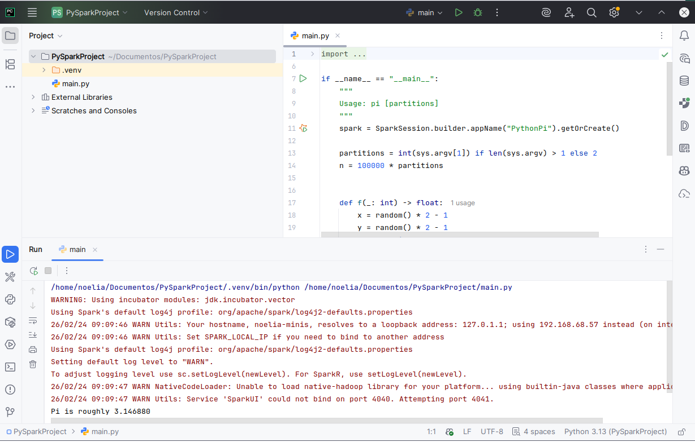
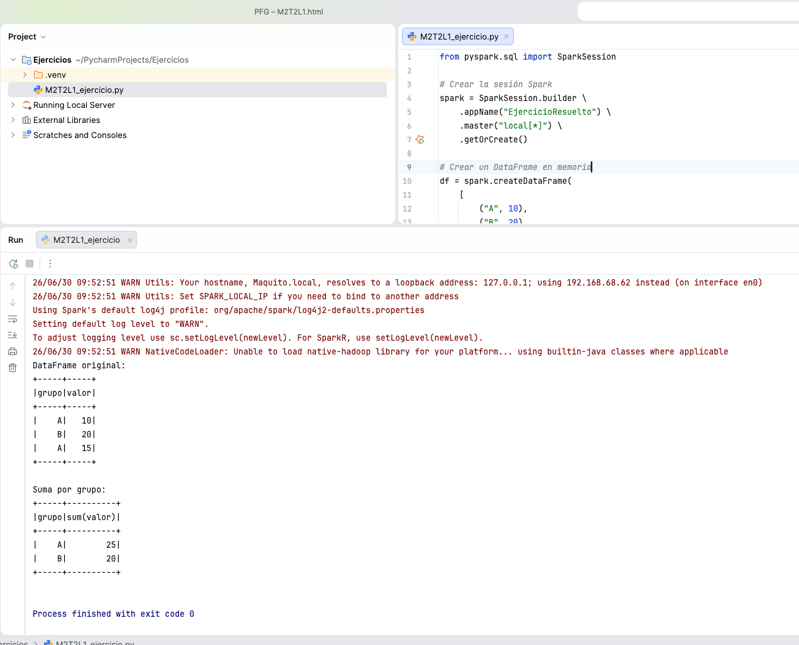

Entornos de programación de aplicaciones Spark
DESCRIPCIÓN
Hay muchas maneras de programar en Spark, hay APIs enriquecidas en Java, Scala, Python y R. Además, se puede ejecutar en diversos entornos como hemos visto, en esta lección.
Además, podemos ejecutarlo, desde la consola, o un entorno de desarrollo específico. La elección del entorno de desarrollo depende del perfil del usuario, el caso de uso y el entorno de ejecución. A continuación se muestra una tabla con recomendaciones para diferentes perfiles:
- Scala: Spark Shell
-
Python
- PySpark
- Jupyter Notebooks
-
Scala/Java
- Eclipse
- IntelliJ
-
Python
- PyCharm
- Visual Studio Code
| Perfil | Entorno ideal |
|---|---|
| Científico de datos | PySpark + Jupyter/Databricks |
| Ingeniero de datos | Scala + JetBrains + Spark SQL |
| Analista | Spark SQL + Notebooks |
| Arquitecto cloud | Spark en Kubernetes o Dataproc/EMR |
En nuestro caso, y aprovechando la licencia de estudiante que nos proporciona Uned a traves de github vamos a instalar Pycharm de jetBrains, que ademas permite integración total con los cuadernos de Jupyter.
INSTALACIÓN Y CONFIGURACIÓN DE PYCHARM
Para instalar Pycharm, lo primero es acceder a la página de Jetbrains y descargar la versión Community (o si tenemmos cuenta de Github Student, la opción PRO), que es gratuita con cuenta de alumno de la uned.
Una vez descargada e instalada, se puede configurar el entorno para trabajar con Spark. Esto incluye:
- Instalar el plugin de Spark para PyCharm.
- Configurar un intérprete de Python compatible con PySpark.
- Crear un nuevo proyecto y configurar las dependencias de Spark.
Con estos pasos, tendremos un entorno de desarrollo completo para programar aplicaciones Spark en Python, con soporte para depuración, autocompletado y ejecución de notebooks.

Figura 1: Pantalla de instalación de PyCharm
EJERCICIO RESUELTO PASO A PASO
Resolver un caso minimo relacionado con la leccion
Este ejercicio aplica el concepto de la leccion sobre un ejemplo pequeño y verificable.
- Crea un nuevo proyecto Spark en pycharm.
- Ejecuta una transformacion.
- Crea un archivo ejercicio.py con el siguiente código.
from pyspark.sql import SparkSession
# Crear la sesión Spark
spark = SparkSession.builder \
.appName("EjercicioResuelto") \
.master("local[*]") \
.getOrCreate()
# Crear un DataFrame en memoria
df = spark.createDataFrame(
[
("A", 10),
("B", 20),
("A", 15)
],
["grupo", "valor"]
)
# Mostrar el DataFrame original
print("DataFrame original:")
df.show()
# Agrupar y sumar
print("Suma por grupo:")
df.groupBy("grupo").sum("valor").show()
# Finalizar Spark
spark.stop()
Resultado esperado:
